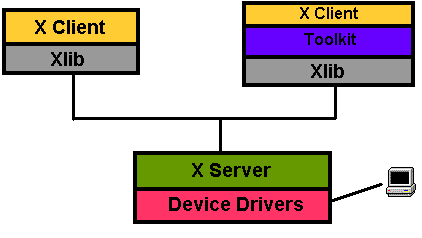

X下的程序设计并不困难，但如果只是基于Xlib，一般说来类似与MS windows SDK编程，即比较繁琐。
X程序的流程
1. 取得命令行参数；
2. 与用户的显示器建立连接；
3. 加载资源；
4. 按照资源文件设置字体和色彩；
5. 决定顶级窗口的位置和大小；
6. 生成顶级窗口；
7. 设置wm属性，告知wm它希望的大小和位置；
8. 为顶级窗口生成图形上下文(graphics context：包含字体，前景背景色彩等信息)；
9. 设置必须的窗口属性(如colormap等);
10.选择希望处理的事件；
11.映射顶级窗口，这是它才真正显示出来；
12.生成其它窗口，并保存它们的标志供以后访问；
13.读取事件，解释并处理它；
14.重复13，直到收到退出事件；
15.退出时，销毁顶级窗口，关闭与显示器的连接。
X程序设计的一个核心特性是它的事件驱动机制。这使得用户和应用能更好的交互。
Event Driven
- 应用一旦初始化完毕，即进入一个事件循环；
- 事件循环是个无限循环，它不停地在事件队列中查看X事件；
- 事件一般说来是由用户与显示器的交互产生的，也包括其它X Client发来的事件以及其它非X应用发来的事件；
- 如果事件队列中没有事件，它就继续循环；
- 如果有事件，则调用相关函数来处理它；
- X Client可以选择它希望响应的事件种类；
- 如果退出循环，那么程序也就结束了。
Xlib是X Protocol的API，通常我们说X Protocol是X的机器语言，而Xlib则是汇编语言。Xlib之上则是Xt Intrinsics library，在这里是OO的设计实现，有大量的widgets可用。在Xt之上则是各种各样的toolkits，最常见的有Motif，Qt，GDK等等(实际上，Qt和GDK都是直接建立在Xlib上的)。当然效率最高的还是Xlib。

图1：X应用的开发工具